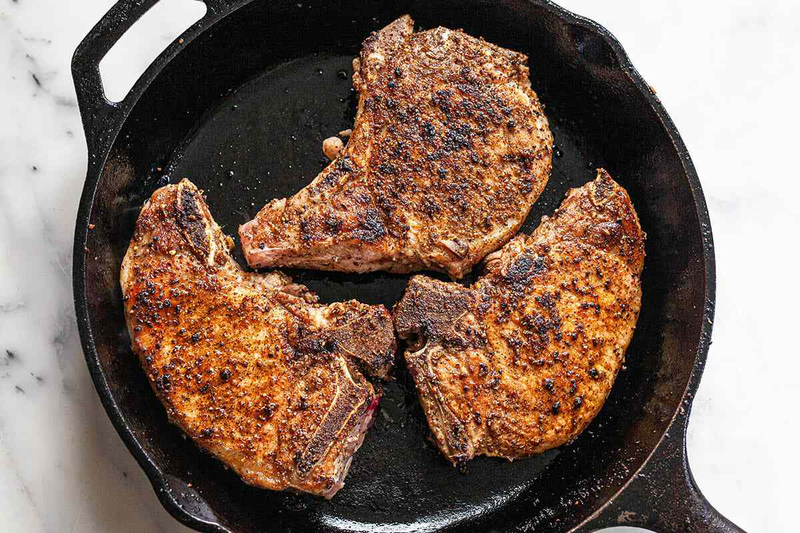
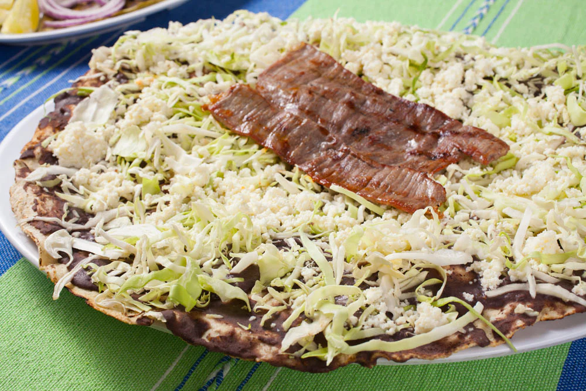
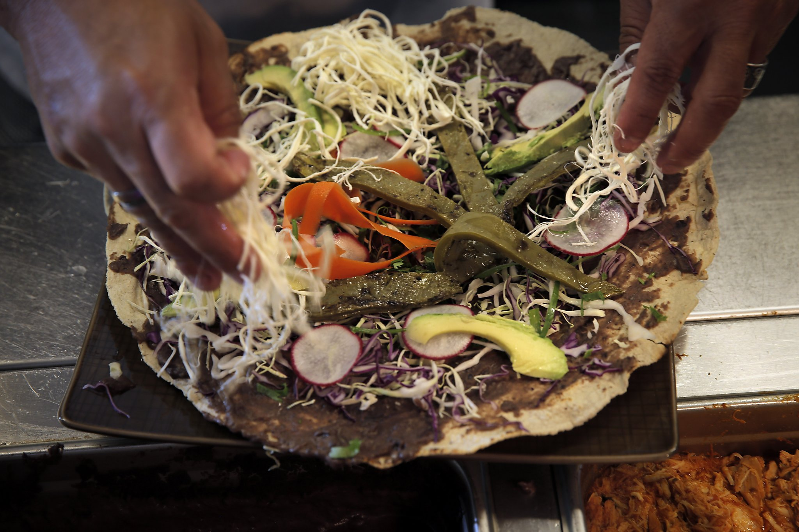

Prepare all ingredients: chorizo, steak, beans, tomatoes, cheese, and tortillas.
If using a pizza stone, place it on the lowest rack of your oven and preheat to 375°F. Let the stone heat for at least 45 minutes. If using a baking sheet, place a rack in the center of your oven and preheat to 375°F.
Cook the Pork

In a heavy-duty skillet, sauté the pork over low heat until the fat is rendered and the pork is crispy, approximately 1 hour.
Remove the skillet from the heat and allow the meat and rendered fat to cool slightly for about 5 minutes.
Separate the meat from any bones (save or freeze the bones for stock if desired).
Prepare the Asiento

Transfer the rib meat and rendered fat to a high-speed blender.
Add 2 tablespoons of neutral oil and salt.
Blend until smooth.
Add any more oil as needed but should be fine!
Assemble the Tlayuda

Spread an even layer of asiento on each tortilla.
Ensure the refried beans are smooth and spreadable. If they are too thick, blend with a bit of water until the right consistency is achieved. Spread an even layer of refried beans over the asiento on each tortilla.
Layer the tortillas with shredded cabbage and mozzarella.
Bake
Add any additional meat or vegetable toppings.
Place the tlayuda directly on the preheated pizza stone or baking sheet. Bake until the tortilla is crispy, about 5 minutes.
Serve!
Garnish with cilantro and serve with salsa, if desired.